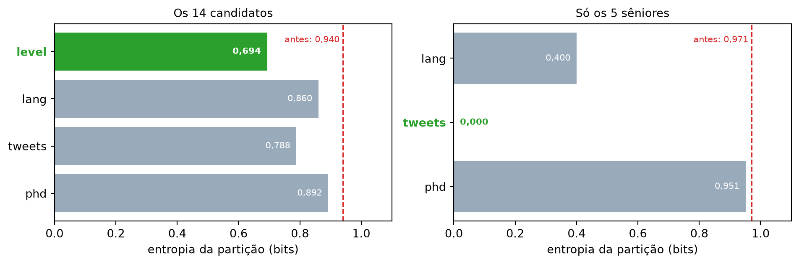

from typing import Any, List
import math
from collections import Counter
def entropy(class_probabilities: List[float]) -> float:
"""Dada uma lista de probabilidades de classe, calcula a entropia"""
return sum(-p * math.log(p, 2) for p in class_probabilities if p > 0)
def class_probabilities(labels: List[Any]) -> List[float]:
total_count = len(labels)
return [count / total_count for count in Counter(labels).values()]
def data_entropy(labels: List[Any]) -> float:
return entropy(class_probabilities(labels))
def partition_entropy(subsets: List[List[Any]]) -> float:
"""Devolve a entropia desta partição dos dados em subconjuntos"""
total_count = sum(len(subset) for subset in subsets)
return sum(data_entropy(subset) * len(subset) / total_count
for subset in subsets)A Entropia de uma Partição
Nota
Esta seção corresponde a The Entropy of a Partition, do capítulo 17 de Grus (2019).
O que a seção anterior fez foi calcular a entropia — a incerteza — de um único conjunto de dados rotulados. Só que cada estágio de uma árvore de decisão consiste em fazer uma pergunta cuja resposta particiona os dados em dois ou mais subconjuntos. A pergunta “tem mais de cinco patas?” separa os animais entre os que têm (aranhas) e os que não têm (equidnas).
Precisamos, então, de uma noção de entropia da partição, e não de um conjunto só.
A armadilha da média simples
O que queremos de uma boa partição é que ela divida os dados em subconjuntos que, eles próprios, tenham entropia baixa — ou seja, que sejam bem decididos. Uma partição ruim é a que produz subconjuntos grandes e incertos.
O detalhe está no “grandes”. A pergunta “sai na moeda australiana de cinco centavos?” era, na verdade, bem burra (embora sortuda): ela particionava os animais restantes em \(S_1 = \{\text{equidna}\}\) e \(S_2 = \{\text{todo o resto}\}\). O subconjunto \(S_1\) tem entropia zero — perfeito! —, mas \(S_2\) é ao mesmo tempo grande e de entropia alta. Se calculássemos a média simples das duas entropias, essa pergunta pareceria excelente, porque um dos lados é perfeito e a média puxa para baixo.
Matematicamente, se particionamos os dados \(S\) em subconjuntos \(S_1, \dots, S_m\) contendo proporções \(q_1, \dots, q_m\) dos dados, a entropia da partição é a soma ponderada
\[H = q_1 H(S_1) + \dots + q_m H(S_m)\]
O peso \(q_i\) é o que impede a armadilha: um subconjunto de entropia zero com um único elemento entra na conta com peso \(1/n\), e quase não desconta nada. Só reduz a entropia da partição quem deixa uma fatia grande dos dados decidida.
Em código:
As três primeiras funções são as da seção 14.2, sem alteração nenhuma. A novidade é só a última: ela pesa a entropia de cada pedaço pelo tamanho do pedaço.
Os dados do vice-presidente de Talentos
Chegou a hora de olhar dados de verdade. O vice-presidente entregou os registros das entrevistas: para cada candidato, a senioridade (level), a linguagem preferida (lang), se é ativo no Twitter (tweets), se tem doutorado (phd) e se a entrevista foi bem (did_well).
from typing import NamedTuple, Optional
class Candidate(NamedTuple):
level: str
lang: str
tweets: bool
phd: bool
did_well: Optional[bool] = None # permite dados não rotulados
# level lang tweets phd did_well
inputs = [Candidate('Senior', 'Java', False, False, False),
Candidate('Senior', 'Java', False, True, False),
Candidate('Mid', 'Python', False, False, True),
Candidate('Junior', 'Python', False, False, True),
Candidate('Junior', 'R', True, False, True),
Candidate('Junior', 'R', True, True, False),
Candidate('Mid', 'R', True, True, True),
Candidate('Senior', 'Python', False, False, False),
Candidate('Senior', 'R', True, False, True),
Candidate('Junior', 'Python', True, False, True),
Candidate('Senior', 'Python', True, True, True),
Candidate('Mid', 'Python', False, True, True),
Candidate('Mid', 'Java', True, False, True),
Candidate('Junior', 'Python', False, True, False)]
len(inputs)14São 14 candidatos, e o did_well está distribuído assim:
Counter(candidato.did_well for candidato in inputs)Counter({True: 9, False: 5})Nove entrevistas boas e cinco ruins. Antes de perguntar qualquer coisa, a incerteza sobre um candidato qualquer é:
data_entropy([candidato.did_well for candidato in inputs])0.9402859586706309Cerca de 0,940 bit. É o ponto de partida: qualquer pergunta útil precisa deixar esse número menor.
Particionando por um atributo
Dois utilitários bastam. O primeiro agrupa as entradas pelo valor de um atributo; o segundo calcula a entropia da partição resultante.
from typing import Dict, TypeVar
from collections import defaultdict
T = TypeVar('T') # tipo genérico para as entradas
def partition_by(inputs: List[T], attribute: str) -> Dict[Any, List[T]]:
"""Particiona as entradas em listas conforme o atributo especificado."""
partitions: Dict[Any, List[T]] = defaultdict(list)
for input in inputs:
key = getattr(input, attribute) # valor do atributo especificado
partitions[key].append(input) # põe a entrada na partição certa
return partitions
def partition_entropy_by(inputs: List[Any],
attribute: str,
label_attribute: str) -> float:
"""Calcula a entropia correspondente à partição dada"""
# as partições são feitas das nossas entradas
partitions = partition_by(inputs, attribute)
# mas partition_entropy precisa só dos rótulos de classe
labels = [[getattr(input, label_attribute) for input in partition]
for partition in partitions.values()]
return partition_entropy(labels)Agora dá para perguntar, a cada um dos quatro atributos, quanta incerteza ele elimina:
for key in ['level', 'lang', 'tweets', 'phd']:
print(f"{key:8s} {partition_entropy_by(inputs, key, 'did_well'):.6f}")level 0.693536
lang 0.860132
tweets 0.788450
phd 0.892159| Atributo | Entropia da partição |
|---|---|
level |
0,693536 |
tweets |
0,788450 |
lang |
0,860132 |
phd |
0,892159 |
Os quatro ficam abaixo da incerteza inicial de 0,940 bit, e é tentador ler isso como “todos carregam alguma informação”. Não carrega essa conclusão: a entropia de uma partição nunca é maior que a do conjunto inteiro — o ganho é não negativo por construção —, então “reduziu a incerteza” não distingue sinal de ruído. Nenhum atributo poderia ter falhado nesse teste.
Dá para medir o quanto isso engana. Acrescentando aos mesmos 14 candidatos uma coluna sorteada ao acaso entre três valores, sem relação nenhuma com o alvo, o ganho médio em 1.000 sorteios é de 0,131 bit — e nunca deu zero, nem uma vez; o menor sorteio ficou em 0,0013. Ou seja: nesta base, ruído puro rende mais que o phd, cujo ganho é de 0,048 bit. Com 14 exemplos, quase tudo parece informativo.
O que a tabela sustenta é a comparação, não o julgamento individual: o menor de todos, e portanto o vencedor, é level. Particionar os candidatos por senioridade deixa a incerteza média em 0,694 bit, uma redução de cerca de 0,247 bit.
A partição mostra por quê:
for valor, grupo in partition_by(inputs, 'level').items():
rotulos = [c.did_well for c in grupo]
print(f"{valor:7s} n={len(grupo)} {dict(Counter(rotulos))} "
f"H={data_entropy(rotulos):.4f}")Senior n=5 {False: 3, True: 2} H=0.9710
Mid n=4 {True: 4} H=0.0000
Junior n=5 {True: 3, False: 2} H=0.9710O grupo Mid é o herói silencioso: os quatro candidatos de nível intermediário se saíram bem, todos, então esse pedaço da partição tem entropia zero e carrega 4 dos 14 candidatos consigo. Os outros dois grupos continuam quase indecisos (3 contra 2, em ambos), mas juntos já não pesam o suficiente para estragar a média.
O que acontece dentro de um ramo
Escolhido level como primeira pergunta, cada grupo vira um problema novo — menor e com um atributo a menos disponível. Olhemos os cinco candidatos sêniores:
senior_inputs = [entrada for entrada in inputs if entrada.level == 'Senior']
print(f"entropia dos {len(senior_inputs)} sêniores: "
f"{data_entropy([c.did_well for c in senior_inputs]):.6f}\n")
for key in ['lang', 'tweets', 'phd']:
print(f"{key:8s} {partition_entropy_by(senior_inputs, key, 'did_well'):.6f}")entropia dos 5 sêniores: 0.970951
lang 0.400000
tweets 0.000000
phd 0.950978
tweets deixa os sêniores sem nenhuma incerteza.
Os cinco sêniores começam com entropia 0,971 — quase o máximo de 1 bit, já que são 3 contra 2. E aí acontece o melhor momento do capítulo:
Particionar os sêniores por tweets dá entropia exatamente 0,000000.
Zero não é “muito bom”. Zero é o valor que a entropia só assume quando cada lado da partição contém uma única classe — quando não sobrou nenhuma dúvida em nenhum dos pedaços. Como a entropia da partição é uma soma ponderada de entropias não negativas, ela só dá zero se cada parcela der zero, e cada parcela só dá zero se aquele subconjunto for puro.
Em outras palavras: entre os sêniores, quem tuita se saiu bem, e quem não tuita se saiu mal. Sem exceção. Não há mais nada a perguntar — o ramo acabou ali.
Vale conferir a afirmação diretamente, em vez de acreditar no número:
for valor, grupo in partition_by(senior_inputs, 'tweets').items():
print(f"tweets={str(valor):5s} n={len(grupo)} "
f"{dict(Counter(c.did_well for c in grupo))}")tweets=False n=3 {False: 3}
tweets=True n=2 {True: 2}Três sêniores que não tuitam, os três com entrevista ruim; dois que tuitam, os dois com entrevista boa. É essa pureza que o 0.000000 estava reportando.
Aviso
Cinco pessoas. Antes de sair contando a alguém que tuitar prevê o desempenho de sêniores em entrevista, releia a frase anterior: cinco pessoas. Uma regra perfeita sobre cinco exemplos é o resultado mais fácil de obter e o menos confiável que existe — com quatro atributos e cinco pontos, encontrar uma separação perfeita por acaso é quase esperado.
A árvore vai adotar essa regra assim mesmo, porque é isso que o algoritmo faz: ele otimiza sobre os dados que recebeu, e não tem como saber que recebeu poucos. Esse é precisamente o mecanismo do sobreajuste do Capítulo 8, visto de perto, e é o problema que a seção 14.6 vai atacar.
O atributo que engana o critério
Há um problema sério com esta abordagem, e ele merece um exemplo executado.
Particionar por um atributo com muitos valores distintos produz entropia baixíssima quase de graça — no limite, subconjuntos de uma pessoa cada, todos necessariamente de entropia zero. Imagine que você trabalha num banco e quer prever inadimplência a partir de dados históricos. Se o conjunto contém o CPF de cada cliente, particionar por CPF produz subconjuntos de uma pessoa, entropia zero, vitória esmagadora sobre qualquer outro atributo.
Vamos fazer exatamente isso com os candidatos, acrescentando um número de matrícula sem significado nenhum:
class CandidatoComId(NamedTuple):
id: int
level: str
lang: str
tweets: bool
phd: bool
did_well: Optional[bool] = None
com_id = [CandidatoComId(n, c.level, c.lang, c.tweets, c.phd, c.did_well)
for n, c in enumerate(inputs)]
for key in ['id', 'level', 'lang', 'tweets', 'phd']:
print(f"{key:8s} {partition_entropy_by(com_id, key, 'did_well'):.6f}")id 0.000000
level 0.693536
lang 0.860132
tweets 0.788450
phd 0.892159O id vence por goleada: 0,000000 contra os 0,694 do level. Pelo critério que acabamos de escrever, o número de matrícula é o melhor preditor de desempenho em entrevista de que dispomos.
Aviso
Um modelo que depende do id tem certeza de não generalizar. Ele acerta 100% dos dados de treino e não tem nada a dizer sobre o candidato número 15, porque nunca viu o número 15.
O critério de entropia não erra a conta — ele calcula exatamente o que promete. O que ele não sabe é a diferença entre “este atributo explica o fenômeno” e “este atributo identifica a linha”. Nada na fórmula distingue as duas coisas, e é por isso que a responsabilidade fica com você: evite (ou agrupe em faixas) atributos com muitos valores distintos ao construir árvores de decisão.
Isso não é uma peculiaridade de um dataset de brinquedo. É a mesma classe de erro do classificador da seção 1.3, que lia dos próprios dados que deveria explicar os cortes de anos de experiência — e a mesma coisa que um identificador de usuário, um carimbo de tempo com precisão de milissegundo ou um número de pedido fazem, discretamente, com qualquer modelo em que entrem por acidente.
Decidir o que entra como atributo é, portanto, uma etapa do trabalho e não um detalhe de preparação de dados. É o assunto da seção 8.6, e este é o exemplo mais nítido dela em todo o livro: a coluna com o maior ganho de informação é a que precisa ser removida.
DicaNa prática:
mutual_info_classif
A quantidade que estamos calculando tem nome próprio na teoria da informação. A diferença entre a entropia antes de perguntar e a entropia da partição depois de perguntar chama-se ganho de informação, e é o mesmo que a informação mútua entre o atributo e o alvo. Para level, ela vale \(0{,}940286 - 0{,}693536 = 0{,}246750\) bit.
O scikit-learn a oferece pronta, no módulo de seleção de atributos:
from sklearn.feature_selection import mutual_info_classif
# level codificado como 0/1/2, alvo como 0/1
mutual_info_classif(X, y, discrete_features=True, random_state=0)Duas diferenças importam ao comparar com o nosso número. A primeira é a unidade: o scikit-learn devolve nats (logaritmo natural), não bits — para level, ele devolve 0.17103394, que dividido por \(\ln 2\) dá exatamente os nossos 0.24674982. A segunda é que, sem discrete_features=True, ele usa um estimador baseado em vizinhos mais próximos, apropriado para atributos contínuos, e o resultado deixa de bater com a conta discreta.
Repare no que isso significa para o pipeline usual: rodar mutual_info_classif sobre as colunas e ficar com as melhores é fazer, uma vez só e por atributo isolado, exatamente o que a árvore faz recursivamente em cada nó. E herda o mesmo defeito — uma coluna de identificadores lidera o ranking com folga.
Grus, Joel. 2019. Data Science from Scratch: First Principles with Python. 2nd ed. O’Reilly Media.